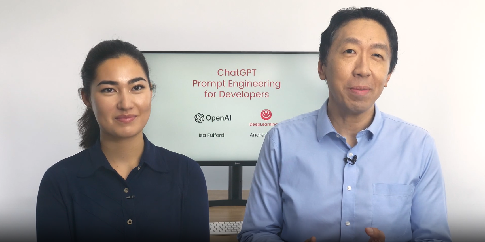

ChatGPT Prompt Engineering for Developers - Course offered by deeplearning.ai and OpenAI
- Prompt Engineering course offered by deeplearning.ai in collaboration with OpenAI.
- This course is free for a limited time.
Deeplearning.ai and OpenAI have come up with a wonderful course 'ChatGPT Prompt Engineering for Developers' to provide us with insights on Prompt Engineering - a field which is gaining a lot of interests lately.
The instructors of this course are Andrew Ng, founder of deeplearning.ai and Isa Fulford, Technical staff at OpenAI.
What is Prompt Engineering and why is this course important?
ChatGPT is a Instruction Tuned Large Language Model. We can get answers from ChatGPT but to get precise answers, prompting comes into play. Example of a use case of prompting given in the Introduction of the course:
We might want to know about Alan Turing and his scientific works. But we ask ChatGPT, ''Tell me about Alan Turing'. It might give a response which includes his whole life history or has a different tone from what we asked.
- We could mention what we want - Tell me about Alan Turing's scientific achievements.
- We could give the tone of how we want - Give the response in a Professional/ Casual way.
The response would be way more appropriate after we try it the above way. This is just a simple example for prompting. Prompt Engineering is gaining a lot of attention right now, since the release of ChatGPT. It is becoming one of the highest paying jobs. This course will be a great learning and it is understandable that the instructors have spent a lot of time in providing a good course.
Course Overview
The course has 6 important sections, which includes the Guidelines for prompting, Summarizing, Inferring, Transforming, Expanding and finally developing a Chatbot. One Pre-requisite is to have a very basic understanding of Python.
The instructors explained a lot of concepts, also about ChatGPT parameters and provided examples which we could practice using the online Python kernel provided alongside or we could install openai package in our computer. The installation steps have been given in the 'Guidelines' section.
1. Guidelines for prompting
- Provide clear instructions and give the LLM time to think. This section deals with giving proper instructions, specifying the format of output we need, specifying the steps needed to get the output, avoiding model hallucinations.
2. Summarizing
- Summarizing or extracting required information from a long passage of article.
3. Inferring
- Identifying sentiments of the article or review, useful when analysing a huge number of product reviews.
4. Transforming
- Translate to another language, correct grammatical errors, proofread articles.
5. Expanding
- Expand a short text input to a huge article. Good for email or essay generation.
6. Chatbot
- Developing a food ordering chatbot, which is fun and fantastic!!
Time for learning and availability of this course
This is a short but fully-packed course, it took me 3 hours to complete. But based on your pace of learning, it could take lesser time too. You could access this course by signing up in deeplearning.ai. This course is free of cost but it won't be free for a long time, since they have mentioned in their community page that it is free for a limited time. Be sure to take up this course!!